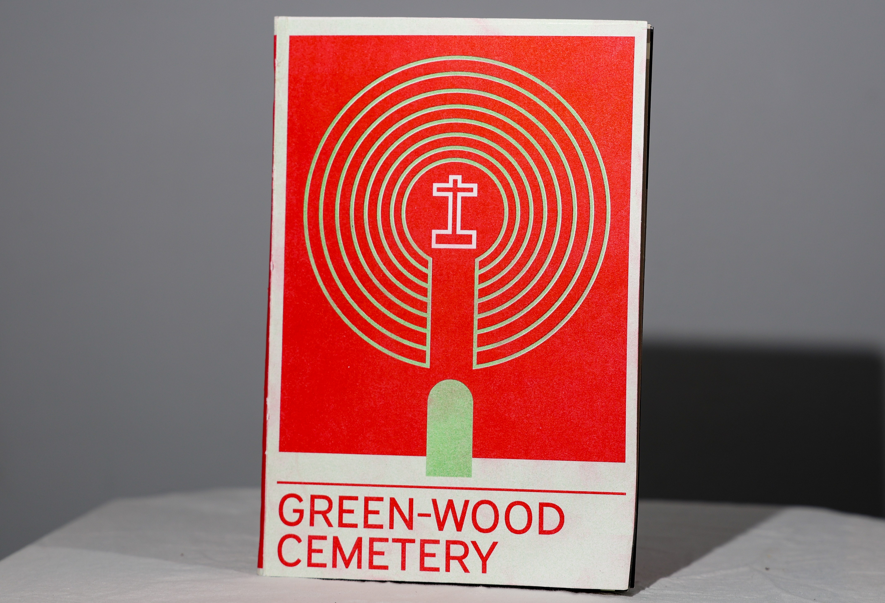
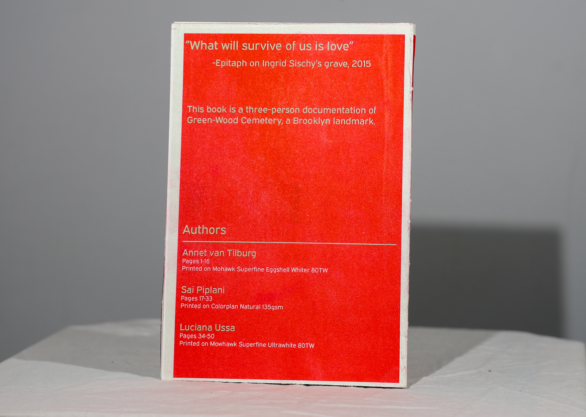
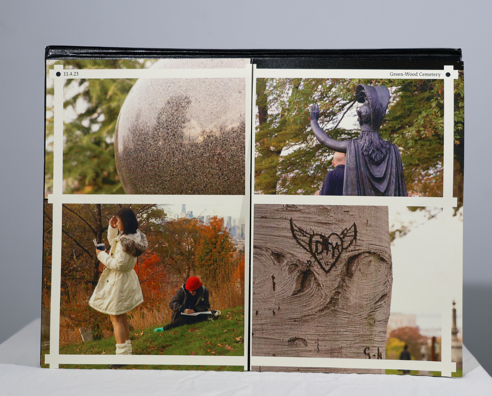
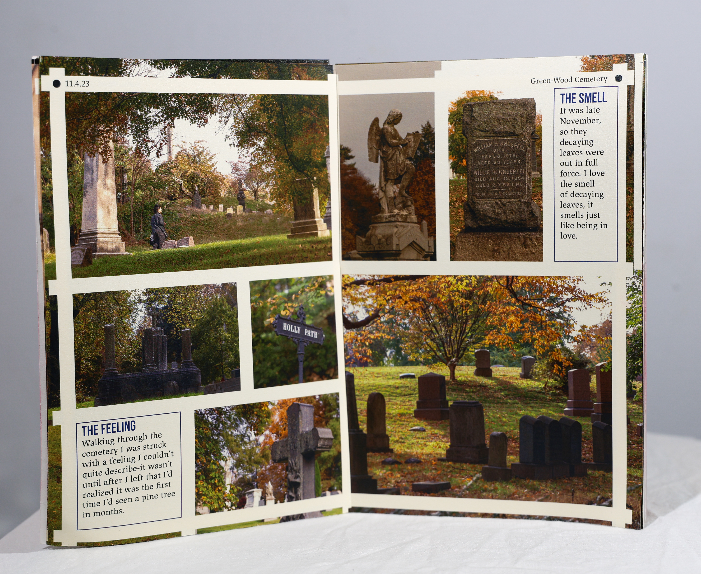
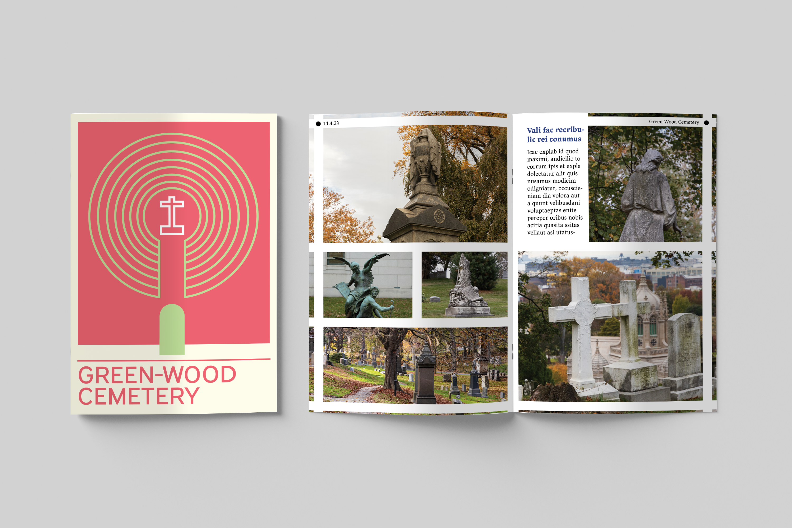

Green-Wood Cemetery Book Cover
Project Type: Class, Integrated Studio 1
Mediums: Risograph, photography, illustrator, indesign
Skills: layout, photography, printing, vector illustration
This book was a collaborative project that aimed to map out Green-Wood Cemetery in Brooklyn, NY.
I designed the cover and contributed the first 16 pages, which are seen below. The goal for the cover was to represent the feeling of the cemetery,
while providing a unifying aesthetic for each "signature". This was done through the 60's inspired vector illustration. My 16 pages were a photography collection
interspersed with my thoughts on the cemetery, also seen below. All photos were taken by me.



